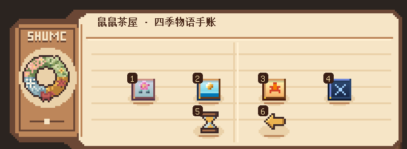
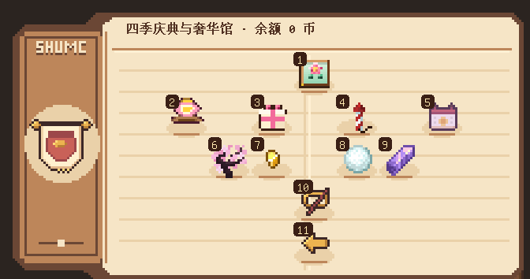

四季与庆典
全服每 3 天换一次季，每季有不同的增益、作物和鱼；还有每季一场的四季庆典、夜空流星雨和各种省力手感
四季轮转 /season
/season（别名 /季节、/jijie）查看当前季节、换季倒计时和当季增益。全服每 3 天自动换一次季，按 春 → 夏 → 秋 → 冬 轮流。
🌸 春季 · 万物生机
作物生长 18% 多长一阶 · 砍原木 12% 掉苹果 · 樱花锦鲤等春季鱼更好钓

☀ 夏季 · 暖风海湾
全程幸运 · Y<50 获得急迫 · 水里获得海豚的恩惠

🍁 秋季 · 金秋硕果
挖掉成熟作物额外掉 1 份 · 红鲑、大闸蟹等秋季鱼更好钓

❄ 冬季 · 炉火雪夜
手持火把或站在营火 4 格内回血 · 冰原鱼类概率 ×2
季节还决定了哪些特色作物能露天种（非当季要进玻璃温室）、采摘掉落哪种当季香料、商业街店主推荐什么。


四季庆典 /festival
/festival（别名 /庆典）打开四季庆典与奢华馆。

每个季节（3 天）只办一场
在该季节第一个有人在线的晚上 21:00–22:00（北京时间）开幕，每场 20 分钟。大家一起钓鱼、捕虫、喂牧场、收菜、颠勺、摆宴席、放河灯来攒气氛值：满 50% 全服发茶屋币和幸运，满 100% 发神料和精铁。
| 项目 | 价格 | 效果 |
|---|---|---|
| 樱花许愿河灯 | 680 币 | 右键放飞，10 分钟幸运 II + 15 福气值 + 15 气氛，全服播报 |
 庆典盲盒 庆典盲盒 | 1800 币（每天 10 次） | 随机：80 福气值 + 河灯 / 铱金神料 ×4 / 随机 3D 家具 / 星露精铁锭 ×4 |
| 🎆 全服烟花包 | 5800 币 | 全服在线玩家幸运 I + 速度 I 15 分钟，你得 120 福气值 |
| 🎉 庆典每日打卡 | 免费 | 每天 40 币 + 5 分钟幸运 I（庆典进行中领 80 币） |
| ✨ 永久粒子光环 | 6800 / 8800 / 10800 / 16800 币 | 樱花旋舞、金秋落叶、冰晶雪花、星辉银河，买一次永久拥有，可随时隐藏 |


茶屋流星雨 /wish
夜里偶尔会划过茶屋流星雨（每场约 3 分钟，现在比较少见，大约几个小时一场），全服会播报。流星雨期间输入 /wish（可以在后面写下心愿）或点播报里的 [🌠 点我许愿]：
- 获得 3 分钟幸运 + 1 分钟生命恢复，还有 20 茶屋币；
- 你的心愿会在全服广播；每场流星雨每人许一次。
注意别和 /pool 锦鲤许愿池搞混：那个是投茶屋币攒全服狂欢的，见 锦鲤许愿池。
休闲手感
这些是不需要指令、默认就有的省力小功能：
| 功能 | 怎么用 |
|---|---|
| 🪑 随处坐下 | 空手右键任意楼梯或下半砖直接坐下；或输入 /sit（别名 /坐下）原地坐。坐在点燃的营火旁会慢慢回血回饱食 |
| 🌱 防踩踏农田 | 在田里跳不会把耕地踩回泥土 |
| 🪓 连锁砍树 | 按住 Shift 用斧头砍原木，整棵树一起倒（一次最多 32 块，正常扣耐久） |
| ⛏ 连锁挖矿 | 按住 Shift 用镐挖矿石，相连的同种矿一起挖（一次最多 24 块）。连锁只对天然方块生效，玩家自己放的原木和矿石不会被连带挖掉；领地里没权限的方块也不会被挖 |
| 🌾 右键收菜 | 右键成熟的农作物直接收割并自动补种 |
| 🎯 准星信息 | 瞄准怪物显示血条；瞄准农作物显示生长进度、肥料剩余茬数和是否在温室；瞄准熔炉、蜂巢、堆肥桶显示烧制进度 / 蜂蜜量 / 堆肥量 |
| 🧱 建筑自动补货 | 生存模式下手里最后一个方块放出去后，会自动从背包里补上同种方块，盖房不用一直翻背包 |
| 🗃 容器一键整理 | 打开箱子、木桶、潜影盒或随身茶屋背包时，Shift + 左键点一个空格子，里面的东西会自动合并并按种类排好 |